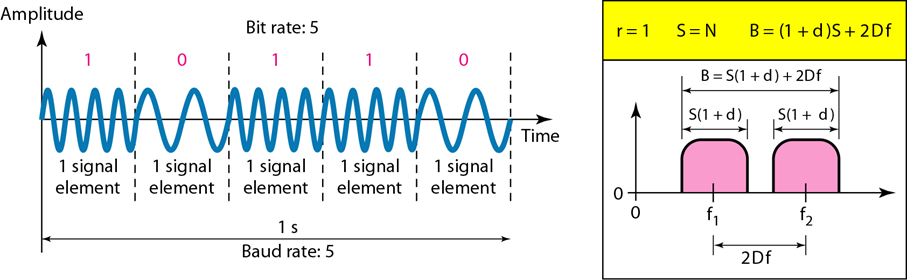
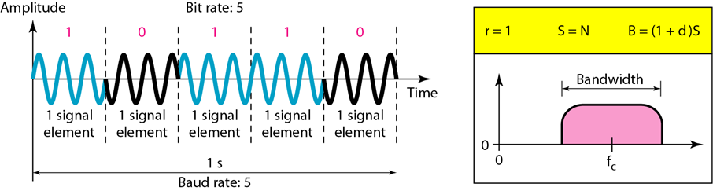
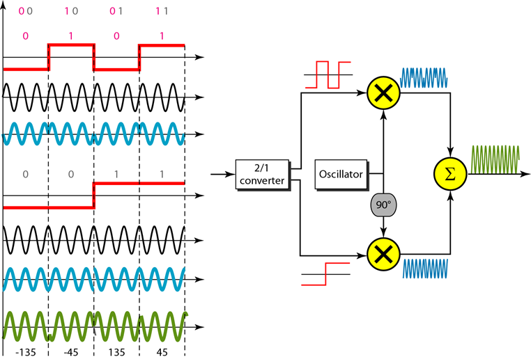
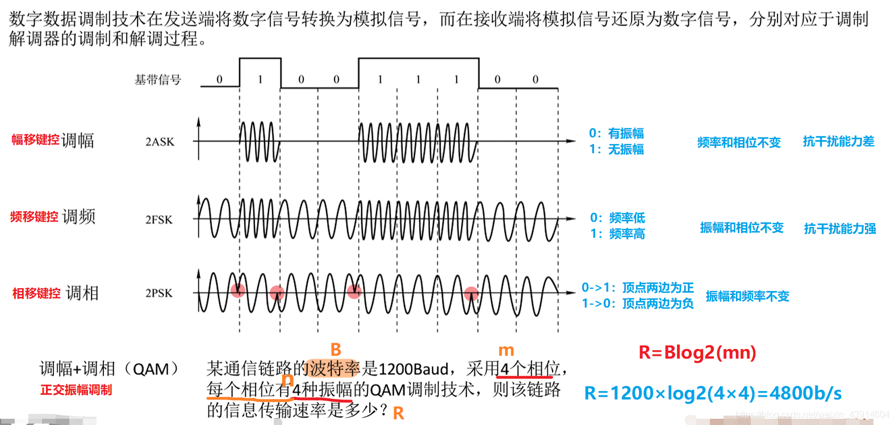

title: 计算机网络 第5章 模拟传输
date: 2021-6-20 22:10:55
categories: 计算机网络
tags:
第5章 模拟传输
一. 比特率和波特率
- 比特率和波特率的关系定义：
$$
S = N \times \frac{1}{r}
$$
- S是波特率（baud），N是数据速率（bps）, r是一个信号元素携带的数据元素个数。
- 模拟传输中r值为r = log2L,这里L是信号元素类型，而不是电平个数。(类似于码元种类)
- 比特率是每秒发送的位数，波特率是每秒发送的信号元素数。在数字数据模拟传输中，波特率小于等于比特率。
二. 数字到模拟转换的概念
1.ASK幅移键控
ask的概念及 ASK 的带宽
概念
- ASK常用的信号元素只用两个电平。这称为二进制幅移键控或开关键控（OOK）。一个信号电平的振幅峰值是0,另一个和载波频率振幅一样。
带宽
2.FSK 频移键控
FSK的概念及 BFSK 的带宽
概念
选择了两个载波频率：f1和f2。如果数据元素是0,使用第一个载波，如果数据元素是1,则使用第二个载波。
如图所示，一个带宽中点的频率是f1，而另一个带宽中点的频率是f2。f1和f2离这两个带的中点距离都是Δf,则两个频率之差是2Δf。
r=1
带宽
- 计算公式：
$$
B = (1 + d) \times S + 2\Delta{f}
$$
3.PSK、BPSK、QPSK 和 QAM 的概念
二进制PSK（BPSK）
- 概念：
- 只用两个信号元素，一个相位是0°,另一个相位是180°。
- 在ASK中，位检测的标准是信号振幅；在PSK中则是相位。
- PSK比ASK更不易受噪声影响。PSK优于FSK是因为不需要两个载波信号。
- 带宽：
和二进制ASK—样，但比BFSK少。
没有浪费带宽用来分离成两个载波信号。

正交PSK（QPSK）
- 概念：
使用两个独立的BPSK调制；一个是同相的，另一个是正交的（异相）。
进入的2个位先经过串行到并行的转换，它发送一个位给一个调制器，发送下一个位给另一个调制器。
如果进入信号中的每个位的持续时间是T，发送相应BPSK信号的每个位持续时间就是2T。
r=2
如右图，上方为同相载波，下为正交载波

正交振幅调制(QAM)
- 概念：
- 使用两个载波，一个同相而另一个正交，而且每个载波都用不同的振幅。
- 正交振幅调制是ASK和PSK的结合。
- 带宽：
- QAM传输所需的最小带宽与ASK和PSK传输所需的最小带宽相同。
